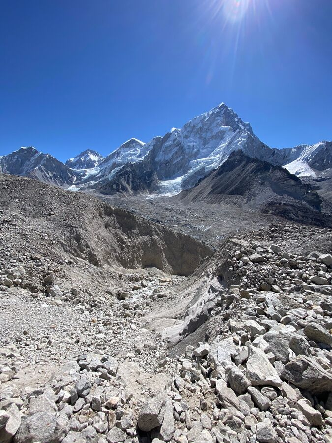
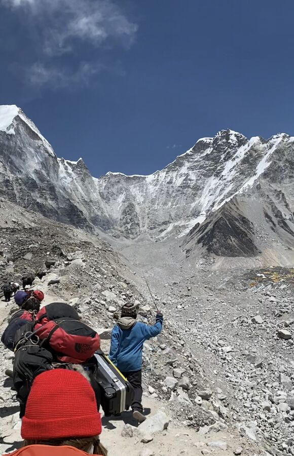
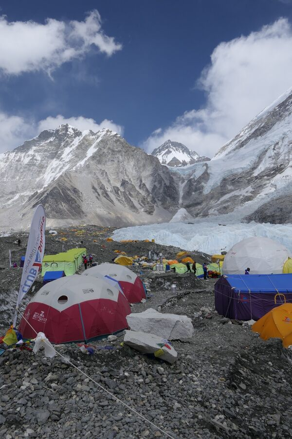
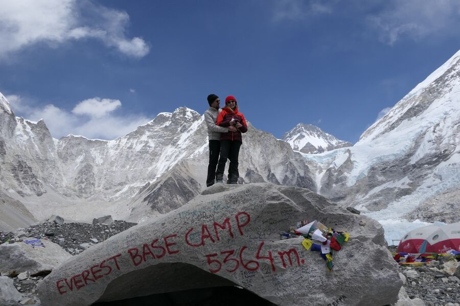
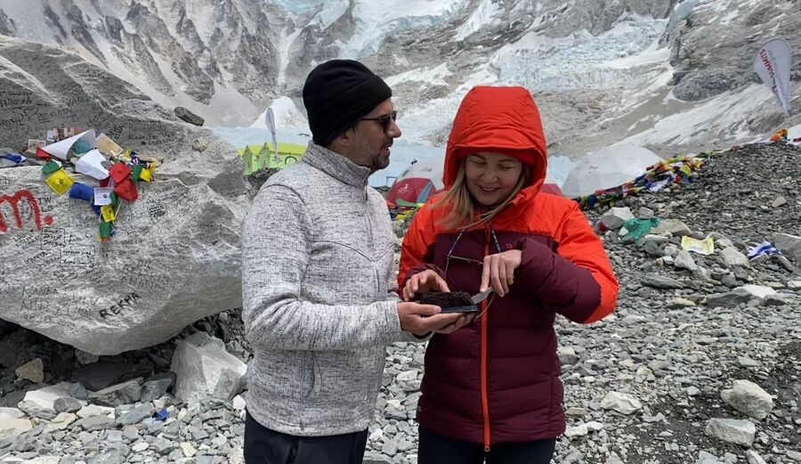
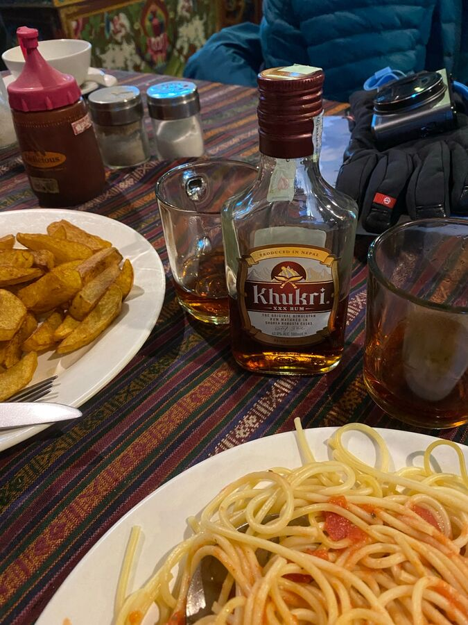
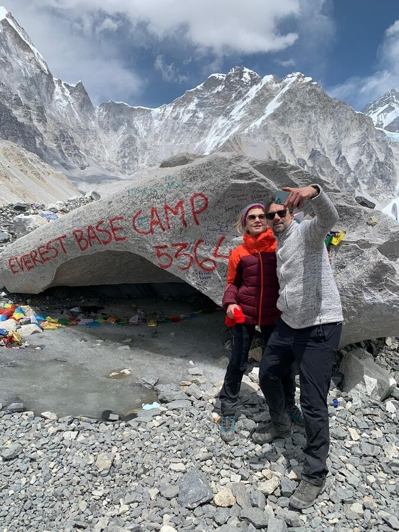

Heute war also der große Tag: Yeşims 50. Geburtstag und das Erreichen des Mount Everest Basecamp (EBC).
Yeşim hatte sich die Tour schon gewünscht, seitdem sie Ralf und ich 2009 gemacht hatten. Wir wollten es dann erst machen, nachdem unsere Tochter alt genug ist, denn ganz ungefährlich ist der Trek zum Basecamp ja auch nicht. 2020 sollte es soweit sein. Dann kam Corona. Also verschoben wir es – und was passt da nicht besser als der 50. Geburtstag?
Wir hatten uns also schon Jahre auf die Tour und – seitdem feststand, dass wir tatsächlich am 26.04. das Basecamp erreichen sollten – monatelang auf diesen Tag gefreut.
Und dann fing der Tag schon mal nicht gut an. Ich hatte schon wieder kaum geschlafen und war morgens, als der Wecker klingelte wirklich am Ende. Alle möglichen Wehwehchen konnte man getrost als Symptome der Höhenkrankheit auslegen: Kein Schlaf, Kopfschmerzen, Übelkeit, Magenverstimmung, Appetitlosigkeit, Herzrasen. Aber ich raffte mich dann doch hoch, zumal Yeşim schon putzmunter und vergnügt in den Startlöchern stand.
Nach dem Frühstück gingen wir wie immer rechtzeitig los, diesmal schon um 7:15 Uhr. Der Weg führte uns einfach geradeaus immer auf der westlichen Seitenmoräne des Khumbu-Gletschers entlang. Es waren zwar nur knapp 5 km, aber die hatten es in sich. Felsen hoch, Abhang runter, Abhang wieder hoch – alles auf über 5.000m. Die Säure schoss uns in die Glieder. Außerdem war wieder viel los. Immer wieder musste man auf dem ohnehin nur schmalen Wanderweg anderen Trekkern, Trägern oder Yaks den Weg freimachen oder diese überholen. Und seitlich ging es Dutzende Meter steil nach unten.

Yeşim war heute mal wieder top drauf, gab die Geschwindigkeit vor und ging voran. Dann folgte ich und der Guide geht immer am Ende. Recht ausgelaugt kamen wir dann nach 2 1/4 Stunden um 9:30 Uhr in Gorak Shep an.
Hier werden wir heute übernachten, es sollte zunächst aber nur der Rastpunkt für die zweite Etappe des Tages sein. Wir aßen kurz eine Nudelsuppe, packten in unseren Tagesrucksack nur das Nötigste und waren um 10:30 Uhr schon wieder auf dem Weg zum Basecamp. Veranschlagt waren dafür ca. 2,5 bis 3 Stunden.
Der Weg von Gorak Shep aus war auch zunächst wirklich toll: Breit, flach, sandig, kaum Steine. Das änderte sich aber schnell, als wir wieder auf die Seitenmoräne kletterten. Dort ging das Gleiche wieder los. Rauf, runter, über Felsen, über grobe Steine, sandige Hügel hoch oder runter. Und ungefähr im mittleren Teil der Strecke gerieten wir in einen Yak-Trek. Und da der Weg sehr eng war und die Ränder ziemlich steil abfielen, mussten wir uns den Rindern zwangsläufig anscheinend.

Nach nur 1 3/4 Stunden erreichten wir unser Ziel: Das Basecamp des Mount Everest. Da jetzt Saison ist und sich viele Expeditionen dort befinden, ist ein Großteil des hinteren Gletschers abgesperrt. Dort stehen die Zelte der Expeditionen, die sich jetzt teilweise schon im 2. oder 3. Basislager befinden. Die Saison läuft von Anfang April bis Ende Mai. Zu anderen Zeitpunkten sind keine Besteigungen erlaubt.

Den Bereich, den der gemeine Trekker erreichen kann, befindet sich nur knapp vor der Abzäunung. Dort gibt es einen großen beschrifteten Felsen, der als Fotohintergrund unzähliger Instagram-Postings dient. So dann jetzt auch unserer.

Wir machten Fotos und Naran hatte ein Stück Kuchen besorgt, den wir dort anschnitten und aßen. Dann überreichte Naran Yeşim auch noch ein Geschenk; Ein Kopfband mit traditionellem Design, das sich Yeşim schon vorher kaufen wollte. Die ganze Situation am Basecamp war dann doch sehr emotional und ein paar Tränchen wurden verdrückt. Ich glaube, das werden wir alle nie vergessen.

Leider mussten wir uns dann auf den Rückweg nach Gorak Shep machen, denn das Wetter kippte langsam aber sicher. Den gleichen Weg mussten wir zurück gehen. Es hatte irgendwie kein Ende. Völlig erschöpft kamen wir gegen 15 Uhr dort an.
Wir zogen uns auf unser Zimmer zurück und ruhten uns aus. Gegen 17 Uhr gingen wir dann in den Gastraum, der schon erwärmt worden war und wo sich viele andere Trekker aufhielten.

Naran luden wir zu einer Flasche napalesischen, süßen Rum ein, aßen unser Abendessen und verbrachten noch Zeit zusammen mit den anderen und Naran.
Jetzt um fast 21:30 Uhr fallen wir todmüde in unsere beheizten Betten. Gute Nacht!
